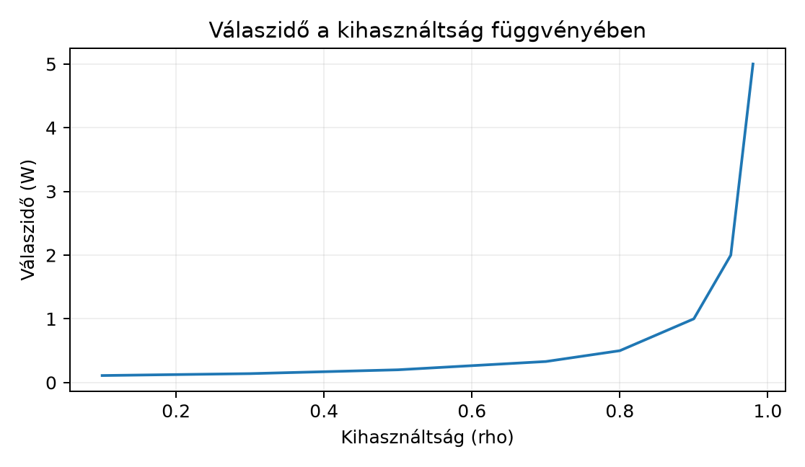

A rendszer teljesítménye ritkán lineáris. Egy adott pontig a kiszolgálás gyors, a válaszidő stabil, a felhasználó pedig elégedett. E pont után azonban hirtelen drámai romlás következik be: a válaszidő megugrik, a hibák megszaporodnak, a szolgáltatás pedig kaszkádszerűen összeomolhat. Ezt a jelenséget nevezzük a rendszer „térdének” (knee point). A kapacitástervezés és a túlterhelés elleni védekezés célja, hogy a rendszert e pont alatt tartsuk, illetve ha elérné, kontrolláltan korlátozza a bejövő forgalmat.
A szoftverarchitektúra szempontjából nem elég a forráskód funkcionális helyessége: az architektúrának azt is garantálnia kell, hogy a rendszer előre meghatározott terhelési határok között kiszámíthatóan viselkedik. Ebben az alfejezetben a terhelés és a kapacitás kapcsolatát modellezzük, megismerjük a Little-törvényt, és bevezetjük a backpressure, a rate limit és a túlterhelés elleni mintákat.
A terhelés méréséhez két alapvető fogalmat kell megkülönböztetnünk:
Amíg az érkezési ráta alacsonyabb, mint a rendszer maximális átbocsátóképessége, a rendszer viselkedése közel lineáris. A válaszidő (latencia) alacsony és stabil. Amint a bejövő forgalom megközelíti vagy meghaladja a rendszer feldolgozási kapacitását, a kérések várakozni kezdenek. A várakozási sorok megtelnek, a memória és a szálkészletek (thread pool) kimerülnek.
A túlterhelésnek két tipikus forgatókönyve van:
A csúcsos terhelés különösen veszélyes, mert az automatizált skálázás (például a Kubernetes HPA) lassabb lehet, mint a forgalom felfutása. Ha a rendszer nem készült fel a túlterhelésre, a következő hibajelenségeket figyelhetjük meg:
A következő, Mermaid szekvenciadiagram egy tipikus túlterhelési hurkot mutat be. Az ilyen diagramokat a „diagrams-as-code” elv alapján a kódbázisban, verziókezelve érdemes tárolni.
sequenceDiagram
participant Kliens
participant SzolgáltatásA
participant Adatbázis
Kliens->>SzolgáltatásA: Kérés (pl. rendelés)
SzolgáltatásA->>Adatbázis: Lekérdezés
Adatbázis--xSzolgáltatásA: Időtúllépés
SzolgáltatásA--xKliens: Hiba (timeout)
note right of Kliens: A kliens újrapróbálkozik
Kliens->>SzolgáltatásA: Kérés újra (retry)
SzolgáltatásA->>Adatbázis: Lekérdezés
Adatbázis--xSzolgáltatásA: Időtúllépés
note right of Adatbázis: A terhelés nő, a rendszer tovább lassulA túlterhelés modellezésének legegyszerűbb és leggyakrabban használt eszköze a sorban állási elmélet (queueing theory), azon belül is a Little-törvény. A Little-törvény alapvető kapcsolatot teremt a rendszerben lévő kérések, az érkezési ráta és a tartózkodási idő között:
ahol:
A törvény rendkívül robusztus: független a kiszolgálási idők eloszlásától, a kapacitás elosztásától és a sorban állási fegyelemtől (FIFO, LIFO, prioritás), amennyiben a rendszer stabil. Ezért kiválóan alkalmas architekturális becslésekre.
Gyakorlati szempontból a Little-törvényt úgy használjuk, hogy meghatározzuk a párhuzamosan feldolgozandó kérések maximális számát (), és ebből következtetünk a szükséges erőforrásokra (szálak, adatbázis-kapcsolatok, processzoregységek). Vegye figyelembe, hogy a mértékegység mindig konzisztens kell legyen (például másodperc alapú).
Példa (e-kereskedelmi flash sale): Tegyük fel, hogy egy akció során a várható érkezési ráta . A rendszerrel szemben támasztott SLO a válaszidőre . Hány kérést kell a rendszernek párhuzamosan kezelnie?
Ez azt jelenti, hogy átlagosan 200 kérés lesz egyidejűleg a rendszerben. Ha minden kérés kiszolgálásához egy szálat és egy adatbázis-kapcsolatot rendelünk, akkor legalább 200 szálra és 200 adatbázis-kapcsolatra van szükségünk csak a várható átlagos terheléshez. Figyelembe kell venni továbbá a szórást és a várakozási sort, ami azt jelenti, hogy a valós kapacitást ennél magasabbra kell tervezni.
A Little-törvény a terhelés és a várakozási sor hossza közötti kapcsolatot is megmutatja. Ha nő, akkor is nő, amennyiben nem csökken. A valóságban a kiszolgálási idő () alsó korlát; a válaszidő () ezt nem közelítheti meg tetszőlegesen alulról. A válaszidő a kiszolgálási időből és a sorban eltöltött időből áll. Amint a beérkezések miatti sorban állás megjelenik, gyorsabban nő, mint , és elérjük a telítettséget.
A rendszer kihasználtságát () az érkezési ráta és a kiszolgálási ráta hányadosaként definiáljuk:
Ha megközelíti az 1-et, a várakozási idő gyakorlatilag a végtelenbe tart – ez a klasszikus túlterhelés. Az alábbi ábra a válaszidő és a kihasználtság kapcsolatát szemlélteti. A görbe jellegzetes: a válaszidő hosszú ideig alacsony, majd a kihasználtság növelésével meredeken emelkedik.

A kapacitástervezésnél tehát nem a 100%-os kihasználtság a cél, hanem egy olyan működési pont, ahol a várakozási sor még kontrollálható. Általános közelítésként a 0,6–0,8 közötti kihasználtság fenntartása az, amely mellett a rendszer még képes elnyelni a kisebb csúcsokat anélkül, hogy a sor hossza drámaian megnőne.
Amikor a rendszer eléri a telítettségi pontját, három alapvető stratégiát alkalmazhatunk. A stratégiák nem zárják ki egymást; egy érett rendszerben rétegenként más-más megoldás a célravezető.
A backpressure az a mechanizmus, amellyel a túlterhelt fogyasztó (consumer) visszajelzést ad a termelőnek (producer), hogy lassítson vagy álljon meg. A cél nem az, hogy a rendszer eldobja a kéréseket, hanem az, hogy a termelői oldal alkalmazkodjon a fogyasztói oldal kapacitásához.
A backpressure a reaktív rendszerek alapelve, de elosztott rendszerekben is megjelenik:
A backpressure megvalósításának kulcsa a korlátos sor (bounded queue). Ha a sor korlátlan, a memória kimerül, és a rendszer összeomlik. Ha korlátos, akkor a túlcsordulásra explicit stratégiát kell adni: eldobás, hibaüzenet, vagy a termelő lassítása. A Mermaid diagram a sorok közötti kapcsolatot mutatja:
flowchart LR
Termelő[Termelő szolgáltatás] -->|Kérések| Sor[Korlátos várakozási sor]
Sor -->|Kérés kiszolgálása| Fogyasztó[Fogyasztó szolgáltatás]
Fogyasztó -->|Visszajelzés: lassíts| TermelőA visszajelzési hurok hiánya esetén a rendszer nem backpressure-t, hanem spill and pray-t (öntsd és imádkozz) valósít meg, ami hosszú távon instabilitáshoz vezet.
Míg a backpressure a belső, hasonló bizalmi szintű komponensek közötti forgalomszabályozásra szolgál, a rate limiting az API-k és a külső kliensek felé alkalmazott védekezés. A rate limiter a bejövő kérések számát korlátozza egy adott időablakban.
A rate limiting célja:
A rate limiting leggyakoribb algoritmusai:
A rate limitet nem architekturális utógondolatként, hanem az
API-szerződés részeként kell megtervezni. A válaszban HTTP
429 Too Many Requests státuszkódot, a
Retry-After fejlécben pedig a várakozási időt adjuk meg. A
kliensoldali SDK-nak ezt tiszteletben kell tartania, különben a
limitálás célját veszti.
Ha a backpressure és a rate limiting ellenére a rendszer belső állapota kritikussá válik (például a CPU kihasználtság tartósan 95% felett van, vagy a memória kifutóban), a rendszernek aktívan csökkentenie kell a feldolgozandó munkát. Ez a load shedding (terhelésleépítés).
A load shedding során a rendszer tudatosan eldob bizonyos kéréseket, hogy a kritikus műveletek továbbra is elérhetők maradjanak. A döntés alapja általában a prioritás:
A load shedding megvalósítása architekturális szempontból azt jelenti, hogy a szolgáltatásoknak tudniuk kell a saját egészségi állapotukat, és a hívó félnek képesnek kell lennie degradált választ adni. Például egy kereskedelmi rendszerben ha a személyre szabott ajánló szolgáltatás túlterhelt, a termékoldal betölthető az ajánlók nélkül, egy alapértelmezett katalóguslistával. Ez a graceful degradation (fokozatos leépülés) elve, amelynél a funkciók egy része ideiglenesen nem, vagy korlátozottan érhető el, de a magas szintű felhasználói élmény megmarad.
A load shedding és a rate limit közti különbség a döntés helye: a rate limit a belépési ponton, a klienstől függetlenül korlátoz, míg a load shedding a rendszeren belül, a belső erőforrások állapota alapján választja meg, hogy mit dolgozzon fel.
A kapacitástervezés célja, hogy a rendszer a várható (és a váratlan) csúcsterhelés alatt is teljesítse a minőségi követelményeket, anélkül azonban, hogy feleslegesen nagy erőforrás-költséget generálna.
A tervezés lépései:
A kapacitástervezésnél a következő kérdéseket érdemes feltenni:
A következő ellenőrzött gyakorlat célja, hogy a Little-törvényt és a túlterhelési mintákat egy kis, reprodukálható példán keresztül alkalmazza. A gyakorlat nem igényel éles rendszert; a számítások és a konfigurációk izolált környezetben vagy jegyzetfüzetben reprodukálhatók.
Egy belső fejlesztői platform (IDP) „Just-in-Time” (JIT) hozzáférés-kezelő szolgáltatást üzemeltet. A szolgáltatás ideiglenes jogosultságot ad a fejlesztőknek egy limitált időablakban, hogy hozzáférjenek bizonyos erőforrásokhoz. A csapat a hónap végén várhatóan csúcsos terhelésre számít, mert ekkor futnak a nagyobb kiadási pipeline-ok.
Terhelési forgatókönyv:
Elvárt eredmény (számítás):
Párhuzamosság becslése: a csúcsidőszakban a rendszerben lévő kérések átlagos száma: Ez azt jelenti, hogy a rendszernek csúcsidőben átlagosan 45 párhuzamos kérést kell kezelnie.
Kihasználtság ellenőrzése: tegyük fel, hogy a szolgáltatás egyetlen példánya legfeljebb 60 párhuzamos kérést tud kezelni 0,5 másodperces átlagos kiszolgálási idővel. Ekkor a kihasználtság: Ez a 0,75 érték a biztonságos működési tartományon belül van, de a tartalék kicsi.
Sor hosszának becslése: ha a kihasználtság , az M/M/1 modell közelítésével a rendszerben lévő kérések várható száma: A sorban várakozó kérések száma pedig . Ez a modell azonban feltételezi a Poisson-folyamatot és az exponenciális kiszolgálási időt; a valós mérés ettől eltérhet.
A labor során a következő döntési naplót javasolt vezetni (a könyvben korábban bemutatott ADR-sablon szerint):
ADR-2024-10-18: Backpressure és rate limit bevezetése a JIT szolgáltatásban
Kontextus:
A JIT szolgáltatásnak nem szabad a pipeline-okból érkező kérésekkel
túlterhelni a központi felhasználókezelő rendszert. A csúcsidőszakban
a bejövő forgalom meghaladhatja a rendszer kapacitását.
Döntés:
1. A JIT szolgáltatás és a felhasználókezelő rendszer közé egy korlátos
(legfeljebb 50 elemet tartalmazó) üzenetsort helyezünk.
2. A JIT szolgáltatás API-ján token bucket alapú rate limitet alkalmazunk:
másodpercenként 100 token, a vödör maximális mérete 150.
3. Ha a sor megtelik, a JIT szolgáltatás HTTP 503-as hibát ad, és a
kliensnek grace period alatt el kell halasztania a kérést.
Alternatívák:
- Korlátlan sor: elutasítva, mert memóriakiürülést okozhat.
- Nincs rate limit: elutasítva, mert egyetlen kliens monopolizálhatja a kapacitást.
- Load shedding priorizálással: későbbre halasztva, amíg a sor
viselkedését mért adatokkal nem validáljuk.
Következmények:
- A felhasználókezelő rendszer védett a túlterheléstől.
- A kliensoldalon explicit hibaüzenet jelenik meg, ahelyett hogy a kérés
csendben elveszne.
- Az üzemeltetőnek figyelnie kell a sor hosszát és a 503-as hibák arányát.
Állapot:
JóváhagyvaA méréshez a következő konfigurációt rögzítjük (a könyvben korábban meghatározott mérési szerződés szerint):
k6 (a pontos verzió
és a script a kiinduló állapotban elérhető).Várt eredmény (amit a modellből számoltunk):
Mért eredmény (a mérés elvégzése után kitöltendő):
| Mérőszám | Várt érték | Mért érték | Eltérés | Megjegyzés |
|---|---|---|---|---|
| p95-ös válaszidő (ms) | < 300 | (pl. 245) | (pl. -55) | |
| Átlagos párhuzamosság (L) | ≤ 45 | (pl. 42) | (pl. -3) | |
| Sor maximális hossza | ≤ 50 | (pl. 14) | (pl. -36) | |
| 503-as hibák aránya | ≤ 1% | (pl. 0,2%) | (pl. -0,8%) |
A dokumentumnak külön kell választania a várt és a mért eredményt, és rögzítenie kell a mérés bizonytalanságát (például a terhelésgeneráló által elért pontos kérésszámot, a hálózati késleltetést, a rendszer CPU-kiugrásait).
Ellenőrzési szempontok:
git revert-hez hasonló, de a konfigurációt visszaállító
paranccsal törölhető. (Például:
kubectl delete -f lab/jit-overload/ – a példa demonstratív,
az éles rendszerre nem vonatkozik.)Ebben az alfejezetben a terhelés, a várakozási sor és a kapacitástervezés alapvető fogalmait tekintettük át. Láttuk, hogy a rendszer válaszideje nem lineárisan nő a terheléssel, hanem a telítettséghez közeledve drámaian megugrik. A Little-törvény () segítségével becsülhető a szükséges párhuzamosság és a várakozási sor hossza.
A túlterhelés elleni védekezés három fő pillére:
A kapacitástervezés nem egyszeri feladat, hanem folyamatos tevékenység, amely a mért adatokon, a terhelési modellen és a döntési naplón alapul.
Ellenőrzőlista a terhelés és a kapacitás kezeléséhez:
Önellenőrző kérdés:
Miért nem elegendő a 99%-os rendelkezésre állású adatbázis-szolgáltatás egy csúcsos terhelésű rendszerben? Milyen mérőszámot kell figyelni ahhoz, hogy a túlterhelést a tényleges összeomlás előtt észleljük? (Útmutató: gondoljon a kihasználtság és a válaszidő görbéjére; a 99%-os rendelkezésre állás nem jelenti azt, hogy a p95-ös válaszidő alacsony marad. A sor hosszát és a telítettséget kell monitorozni, hogy idejekorán beavatkozhassunk.)
A következő alfejezetben ezeket a fogalmakat a FinOps, az energiafelhasználás és a zöld szoftver szempontjaival kapcsoljuk össze, megvizsgálva, hogyan optimalizálható a kapacitás és a költség egyensúlya.